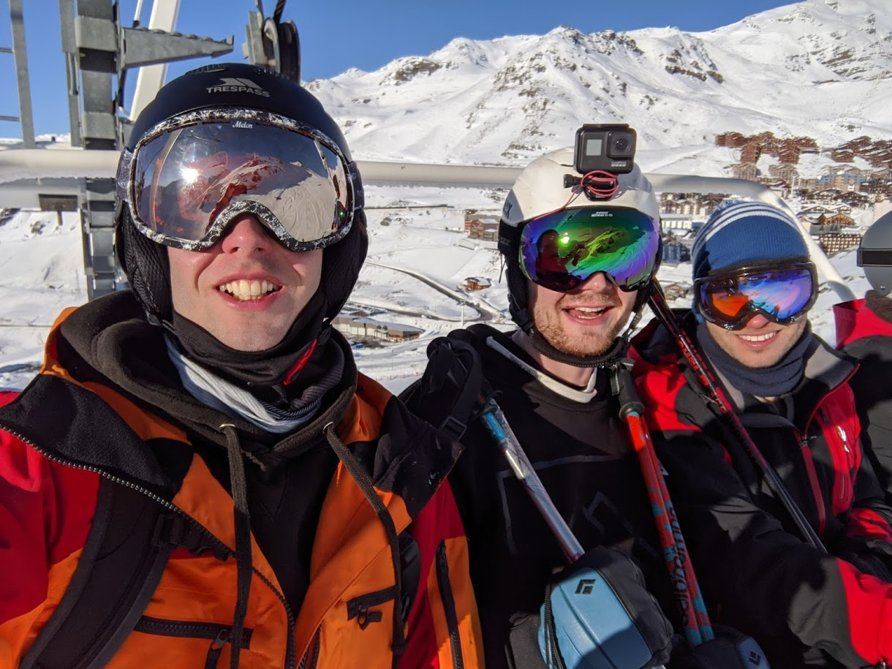

About me
Computer Science at the University of Bristol
I graduated with a MEng in Computer Science (2:1).
My main interests during the degree were in artificial intelligence (AI) and designing and writing software.

Stand-Up Comedy
I enjoy doing stand-up comedy in my spare time, having performed to audiences of up to 50 people.
Skiing
After University I spent the winter season in the French Alps working as a chalet chef for Ski Fammile. This allowed me to pursue my passion of skiing.
Website link